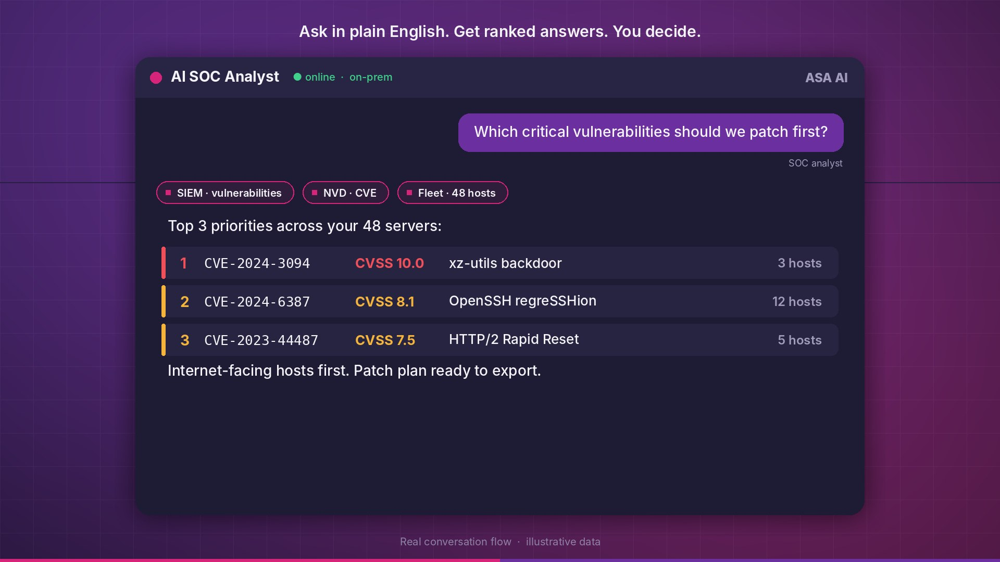
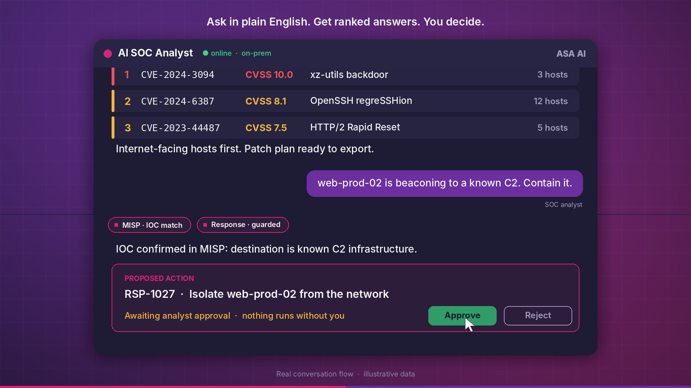
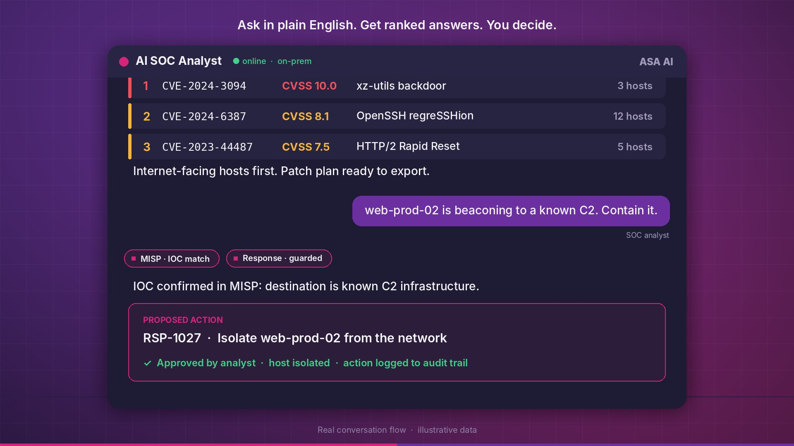
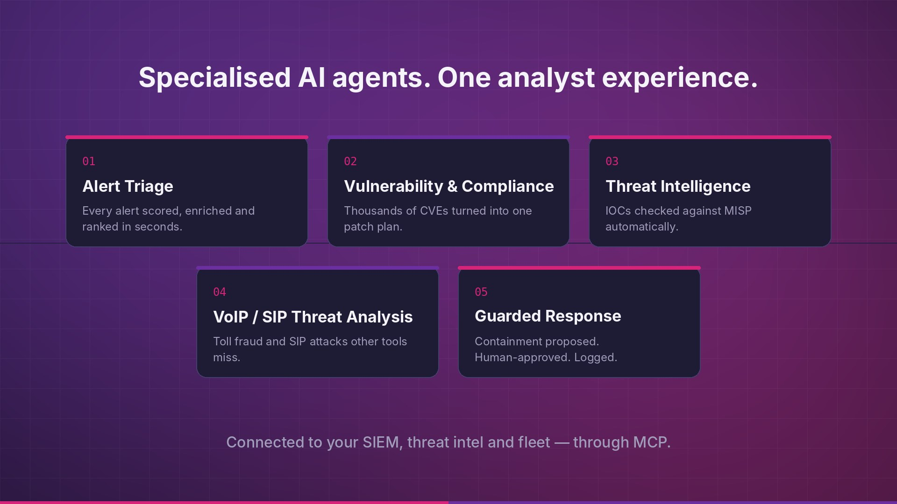
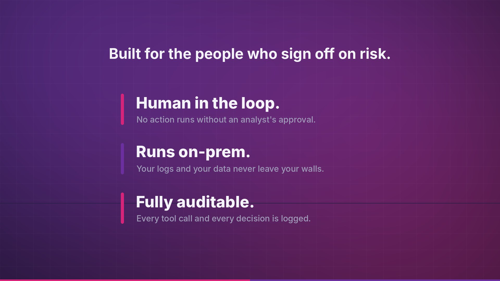
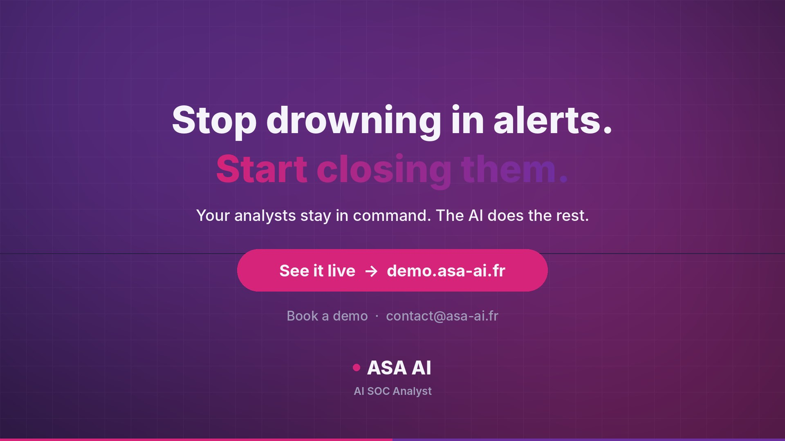

Your analysts are drowning in alerts.
Watch them take control back.
AI SOC Analyst triages every alert, prioritizes thousands of CVEs into one actionable patch plan, and drafts containment in seconds. Your analysts make every call. Nothing executes without human approval.
Full walkthrough of AI SOC Analyst in action. Turn the sound on 🎧
AI does the grind. Your analysts make the call.
Specialized AI agents behind one conversational analyst, wired into your SIEM, threat intel and fleet through MCP.
Alert triage at machine speed
Every alert scored, enriched and ranked, so your team starts the shift with what actually matters.
Risk-based vulnerability prioritization
Thousands of CVEs turned into one ranked patch plan, internet-facing assets first.
Threat intelligence on autopilot
IOCs matched against MISP automatically. Context arrives before you ask for it.
VoIP / SIP threat analysis
Toll fraud and SIP attacks, a blind spot for most SOCs, covered out of the box.
Guarded, human-approved response
Containment is proposed, never forced. One click to approve or reject, and every action is logged.
Built for the people who sign off on risk
Human in the loop
Your SOC analysts stay in the decision seat. The AI recommends; people decide.
Runs on-prem
Private LLM inference on your infrastructure. Your logs never leave your walls.
Audit-ready by design
Every tool call, recommendation and approval is traceable, ready for your compliance team.
See it in action
Plain-English questions. Ranked, sourced answers. Human-approved actions.






Stop drowning in alerts. Start closing them.
Join a live session and watch AI SOC Analyst work a real environment, with your analysts in command.